본 문서는 법무법인 더 에이치 황해 및 NeoPM의 기밀 자료로서, 사전 서면 승인 없이 외부에 공개, 복제, 배포, 전송하는 행위를 일절 금합니다.
본 문서에 포함된 기술, 비즈니스 모델, 시스템 설계, 화면 구성 등 일체의 지적재산권은 법무법인 더 에이치 황해와 NeoPM이 공동으로 소유합니다.
본 문서의 무단 유출, 복제 또는 목적 외 사용이 확인될 경우, 관련 법령에 따라 민·형사상 법적 조치를 취할 수 있습니다.
기존 아파트 단지는 화재보험(국문) 중심으로 운영되어 왔으나, 아파트 공용부 및 세대 간 사고(누수·하자 등)에서 발생하는 제3자 배상책임 및 신체상해를 실질적으로 커버하지 못하는 구조적 한계가 존재합니다.
| 구분 | 국문 화재보험 | CGL (종합배상책임보험) |
|---|---|---|
| 재산손해 | ✓ 커버 | ✓ 커버 |
| 제3자 신체상해 배상 | ✗ 미커버 | ✓ Pillar A |
| 소송·변호사 비용 | ✗ 미커버 | ✓ Pillar B |
| 구내 치료비(과실 무관) | ✗ 미커버 | ✓ Pillar C |
| AI 자동 처리 연계 | ✗ 불가 | ✓ 시스템 연동 |
| TYPE | 판단 기준 | 처리 경로 | 소요 시간 |
|---|---|---|---|
| A — 시공사 하자 | 하자보증기간 내, 구조·방수·설비 하자 패턴 | 시공사 통보 → 하자보수 → 완료 확인 | 평균 7–14일 |
| B — 면책 | 입주민 과실, 고의, 보험 제외 사유 | AI 면책 판단 → 변호사 의견서 발송 → 이의신청 수리 | 평균 3–5일 |
| C — 보험금 산출 | A·B 외, 보험사 보상 대상 | 현장조사 → AI 적산 → HITL → 보험사 승인 → 지급 | 평균 10–21일 |
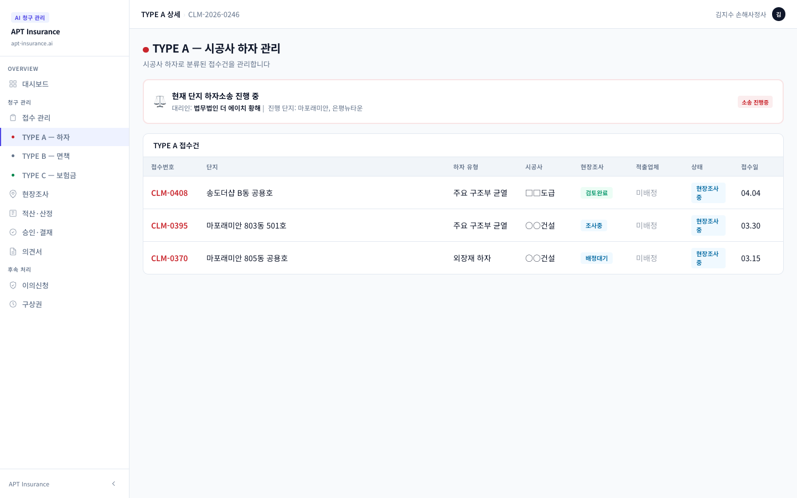
| 사유 | 조건 | 처리 |
|---|---|---|
| 하자보증 만료 | 보증기간 경과 후 동일 하자 재발 | TYPE C 재분류 → 보험금 지급 |
| 시공사 부도 | 시공사 법인 소멸·파산 | TYPE C 재분류 → 보험금 지급 |
| 책임 범위 불명확 | 하자 원인 복합 (시공+노후) | 과실 비율 산정 후 C 부분 지급 |
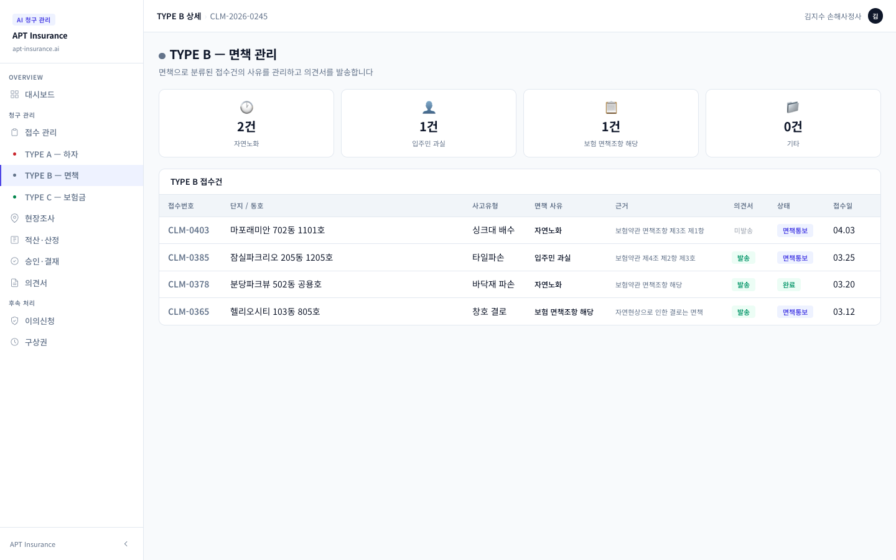
수신: 홍길동 귀중 청구번호: CLM-2026-04-1187
사건 개요: 2026년 3월 15일, ○○아파트 302동 1201호 세대 내 누수로 인한 하부 세대(1101호) 천장 재산손해
검토 의견:
제출된 현장 사진 및 수리이력 검토 결과, 해당 누수는 세대 내 노후 배관 교체 지연으로 인한 것으로 확인됩니다. 이는 입주민의 관리 의무(집합건물법 제5조) 위반에 해당하며, 공용부 하자로 보기 어렵습니다. 따라서 본 건은 단지 배상책임보험(CGL) 지급 대상에 해당하지 않으며, 면책 처리함이 타당합니다.
근거 조항: CGL 약관 제8조 제2항 (피보험자의 고의·과실에 의한 손해), 집합건물법 제5조
이의신청: 본 결정에 이의가 있으신 경우, 수령일로부터 14일 이내에 InsureAll APT 앱을 통해 이의신청서를 제출하실 수 있습니다.
2026. 04. 10. 법무법인 ○○ 담당 변호사 이○○ (인)
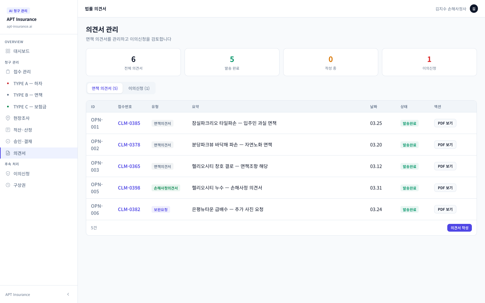
| 단계 | 주체 | 내용 |
|---|---|---|
| ① 현장조사 | 현장 조사원 | 사진·영상 촬영, 손해 범위 측정, GPS 메타데이터 자동 기록 |
| ② AI 적산 | AI 엔진 | 국가 표준품셈 기반 자동 견적 산출 (재료비 + 노무비 + 경비) |
| ③ HITL 보정 | 손해사정사 | AI 산출값 검토·조정, 특수 상황 반영, 최종 손해액 확정 |
| ④ 보험사 승인 | 보험사 | API 연동을 통한 승인 요청·회신 (평균 2–3 영업일) |
| ⑤ 보험금 지급 | 시스템 | 자동 이체 및 지급 내역 앱 통보, 구상권 대상 자동 분류 |
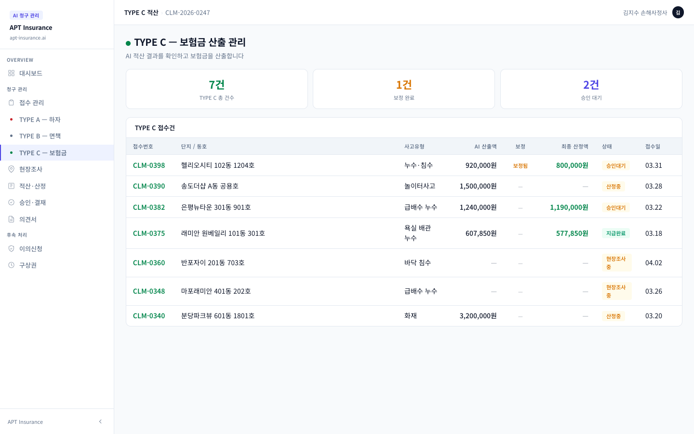
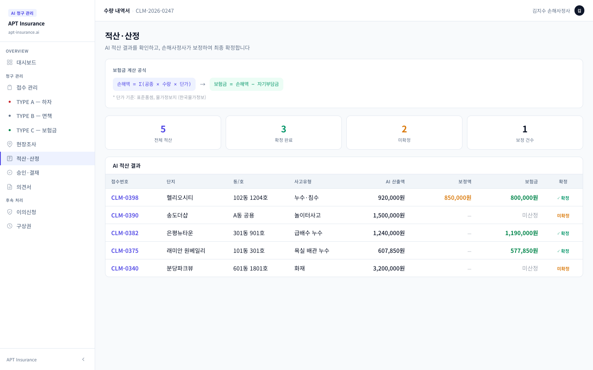
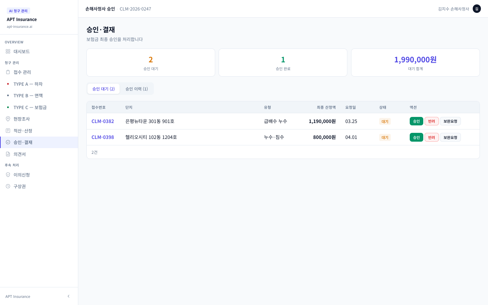
보험금 지급 후 제3자 과실(시공사·입주민)이 확인된 경우, 시스템은 자동으로 구상권 행사 대상으로 분류하고 관련 증빙 일체(AI 현장보고서, 손해사정서, 지급내역)를 패키지화합니다. 담당 변호사가 이를 검토 후 내용증명 발송 및 소송 절차를 진행합니다.
지적재산권 고지 — 본 문서에 기술된 InsureAll APT 플랫폼의 기술, 알고리즘, 시스템 설계 등 일체의 지적재산권(특허권, 저작권, 영업비밀 포함)은 법무법인 더 에이치 황해와 NeoPM이 공동으로 소유합니다.
| 구분 | Pillar A | Pillar C |
|---|---|---|
| 지급 조건 | 법률상 배상책임 성립 (과실 입증) | 구내 발생 신체상해 (과실 무관) |
| 지급 한도 | 증권 한도액 이내 | 1인당 100만 원 (회당) |
| 처리 기간 | 14–30일 (보험사 승인 필요) | 1–3 영업일 (신속 처리) |
| 보험사 승인 | 필요 | 불필요 (자동 심사) |
| 구상권 | 해당 (제3자 과실 시) | 해당 없음 |
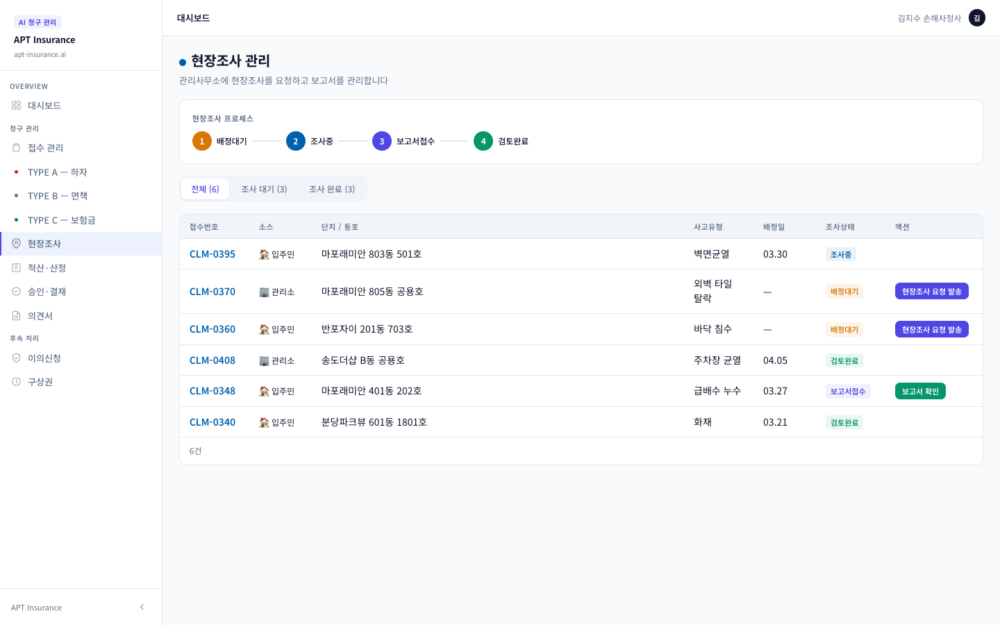
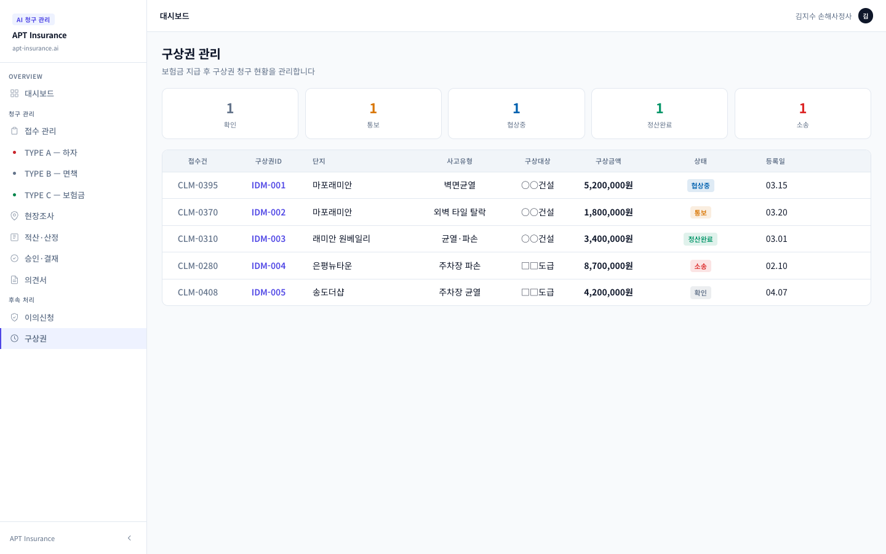
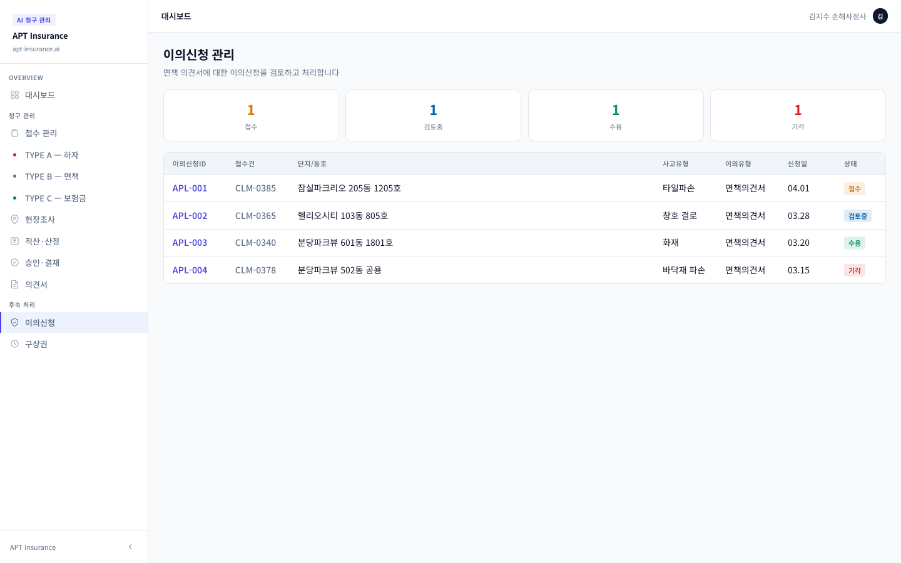
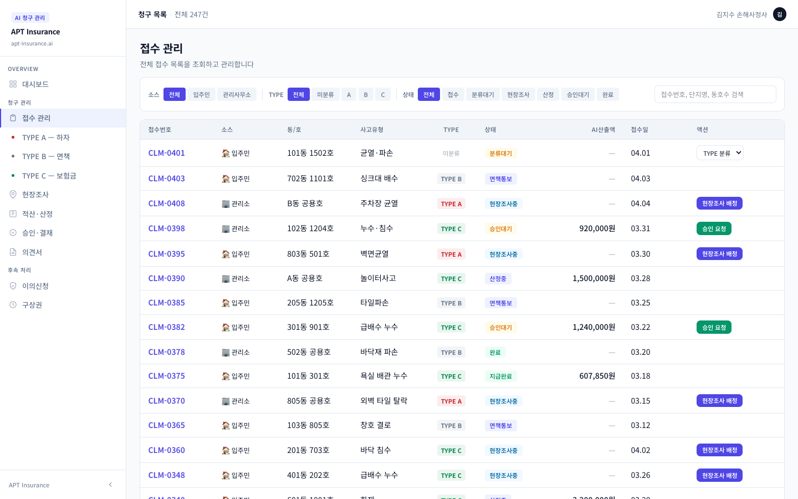
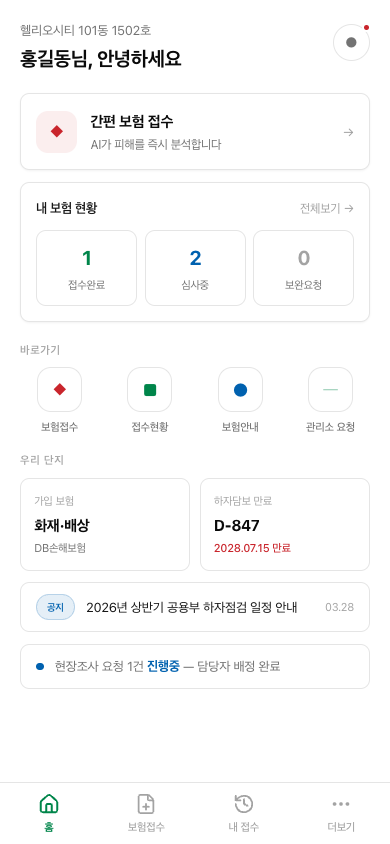
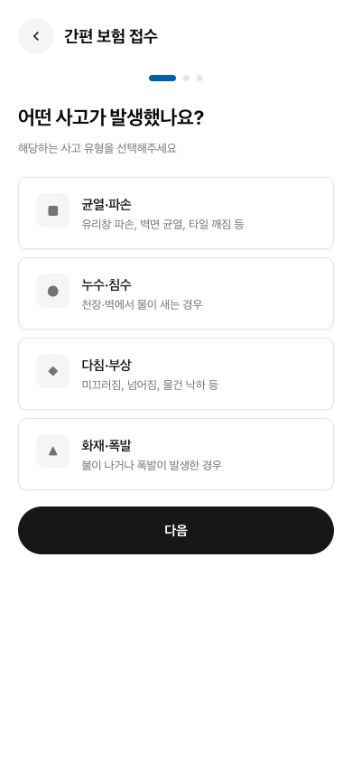
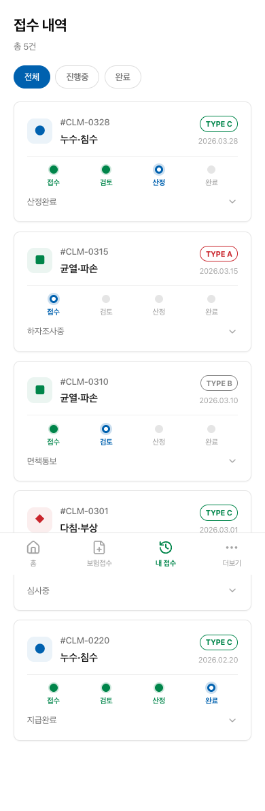
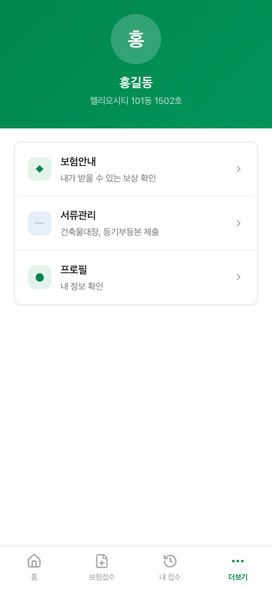
| 화면 | 기능 | 비고 |
|---|---|---|
| 홈 대시보드 | 진행 중 청구 요약, 빠른 접수 버튼, 공지사항 | 실시간 상태 배지 표시 |
| 청구 접수 | 사진 업로드, 손해 위치 지정, 사고 내용 입력 | AI 자동 분류 안내 포함 |
| 내 청구 목록 | TYPE별 진행 상태, 처리 단계 타임라인, 서류 다운로드 | 이의신청 버튼 직접 접근 |
| 더보기 / 설정 | 단지 정보, 보험 증권 조회, 알림 설정, 고객센터 | CGL 담보 내역 요약 제공 |
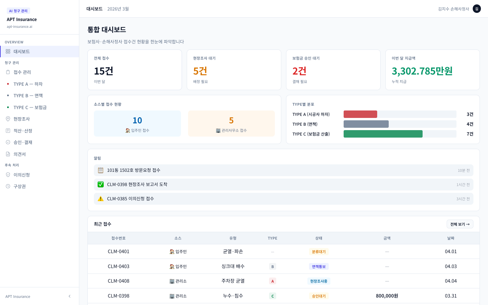
지적재산권 공동소유
본 문서에 포함된 InsureAll APT 플랫폼의 기술, 알고리즘, 시스템 설계, UI/UX, 비즈니스 모델 등 일체의 지적재산권(특허권, 저작권, 영업비밀 등)은 법무법인 더 에이치 황해와 NeoPM이 공동으로 소유합니다.
기밀 유지 의무
본 문서를 수령한 자는 문서에 포함된 정보를 기밀로 유지해야 하며, 사전 서면 승인 없이 제3자에게 공개, 복제, 배포할 수 없습니다.
법적 조치
본 문서의 무단 유출, 복제 또는 목적 외 사용이 확인될 경우, 부정경쟁방지 및 영업비밀보호에 관한 법률, 저작권법 등 관련 법령에 따라 민·형사상 법적 책임을 물을 수 있습니다.